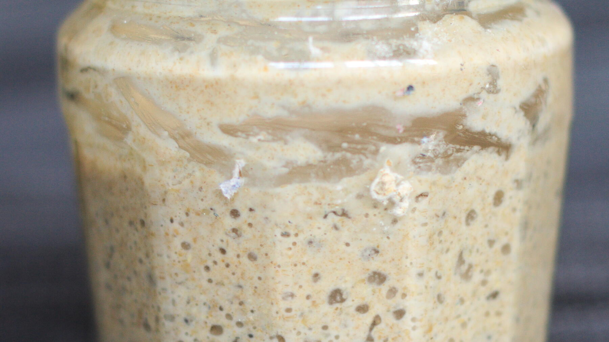

Zurück zur Übersicht
Sauerteig-Anstellgut ansetzen und füttern
Natursauerteig aus nur Roggenmehl und Wasser, in drei Tagen angesetzt. Dazu, wie man ihn lagert und vor dem Backen oder zwischendurch füttert. Eine Portion entspricht einem Glas Anstellgut.
- Zeit
- 15 Min.
- Schwierigkeit
- leicht
- Kategorie
- Teige & Grundrezepte
- Ernährung
- vegan
Zutaten
Portionen
Zum Ansetzen (3 Tage)
- 150 gRoggenmehl (3 × 50 g)
- 150 gWasser, lauwarm (3 × 50 g)
Zum Füttern vor dem Backen
- 100 gRoggenmehl
- 100 gWasser, lauwarm
Zum Füttern zwischendurch
- 50 gRoggenmehl
- 50 gWasser, lauwarm
Zubereitung
- Tag 1: 50 g Roggenmehl und 50 g lauwarmes Wasser (etwa 36 °C) in ein größeres Glas oder eine Schüssel geben und mit einem Löffel gut verrühren. Den Deckel auflegen, nicht zuschrauben, und 24 Stunden bei Zimmertemperatur stehen lassen. Etwas wärmer darf es sein, kalte Luft mag der Sauerteig nicht.
- Tag 2: Wieder 50 g Roggenmehl und 50 g Wasser dazugeben, gut verrühren und 24 Stunden stehen lassen.
- Tag 3: Genauso noch einmal 50 g Roggenmehl und 50 g Wasser einrühren und 24 Stunden stehen lassen.
- Tag 4: Jetzt sollten kleine Bläschen im Teig sein: Der Sauerteig arbeitet und ist fertig. Die ersten Brote damit werden noch nicht sehr voluminös, deshalb anfangs einige Gramm Hefe zum Brotteig geben. Nach 2–3 Monaten ist der Sauerteig gereift und kräftig genug, um den Teig allein aufgehen zu lassen.
- Lagern: Das Anstellgut verschlossen im Kühlschrank aufbewahren. So hält es mindestens eine Woche, danach muss es gefüttert werden.
- Füttern vor dem Backen: Das Anstellgut aus dem Kühlschrank nehmen und mit Roggenmehl und lauwarmem Wasser nach Rezept verrühren, z. B. 100 g Roggenmehl und 100 g Wasser. Über Nacht zugedeckt bei Zimmertemperatur stehen lassen. Wenn sich schöne Bläschen gebildet haben, ist es wieder backfähig, sonst noch einige Stunden an einem wärmeren Ort warten. Die benötigte Menge für den Teig abnehmen, den Rest zurück ins Glas füllen und in den Kühlschrank stellen.
- Nur füttern: Wird ein paar Wochen nicht gebacken, das Anstellgut mit 50 g Roggenmehl und 50 g lauwarmem Wasser verrühren und über Nacht zugedeckt bei Zimmertemperatur stehen lassen, bis sich Bläschen bilden. Dann wieder verschlossen in den Kühlschrank stellen. Alle 1–2 Wochen wiederholen.
Tipp: Statt 100 g Roggenmehl gehen beim Füttern auch 40 g Roggenmehl und 60 g Waldstaudenroggenmehl. Reste vom Anstellgut werden zu knusprigen Sauerteigcrackern.
Hinweis: Die Zeit gilt für die Handgriffe. Das Ansetzen dauert vier Tage.